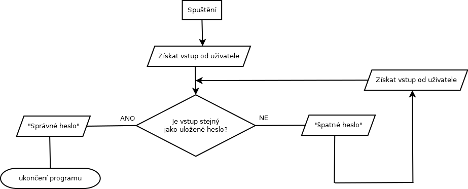

V této spíše teoretické hodině si ukážeme, jak fungují algoritmy. Je to věc, kterou používáme celou dobu, jen jsme si toho zatím moc nevšimli. Je to popsání způsobu, jak nějaký program funguje. Pokročilejší programátoři už toto dělají v hlavě a píšou rovnou kód, ale pro začátečníky je to vhodná pomůcka.
Představme si, že chceme udělat program na kontrolu hesla. Chceme, aby se program zeptal uživatele na heslo a pokud zadá špatné heslo, tak se ho bude ptát znovu dokud nezadá správné heslo. Program teda bude probíhat nějak takto:
Když se podíváme na tento algoritmus, probíhá takto:
Kód by tedy mohl vypadat nějak takto:
Nepodařilo se načíst kód. Řešení pravděpodobně nemáte povolený JavaScript.
Nyní zkuste algoritmus pro program, který:
Algoritmus můžete tvořit v jakémkoliv programu (například Malování) nebo klidně i na papíře. Až tento algoritmus budete mít, vytvořte program který se takto bude chovat.
Nepodařilo se načíst kód. Řešení pravděpodobně ještě nebylo uvolněno, nebo nemáte povolený JavaScript.